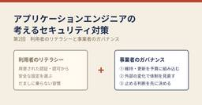

直近1週間の人気フィード
はてなブックマーク数を元に新着優先で並べ替え
Devin Bot に毎朝のパフォーマンス改善を任せてみた 57
57 kickflow Tech Blog
kickflow Tech Blog
毎朝規則正しく巡回してくれる Devin こんにちは。エンジニアの芳賀です。 ループエンジニアリング、流行ってますね！ さて、2026年11月17日、Cognition が Devin の新機能「Devin Bots」を発表しました。 ひと言でいうと、タスク単位ではなく成果単位で Devin に仕事を任せる機能です。 ということで、発表を見て早速 Bot を1体作り、kickflow のリポジトリ
1日前

エンジニア2人・8ヶ月で新規事業を立ち上げる──「フルAI開発」のふりかえり 83 コネヒト開発者ブログ
コネヒト開発者ブログ
エンジニア2人・8ヶ月で新規事業を立ち上げる──「フルAI開発」のふりかえり こんにちは、コネヒト株式会社で働く北島と申します。社内ではしょうぽんと呼ばれています。 2026年10月、ママリの新規事業として「ママリレシートエール」を本格リリースしました。2月の立ち上げから約8ヶ月、営業・企画・デザイン・開発が横断して取り組んだプロジェクトです。 開発はコアメンバーのエンジニア2名で担当し、設計から
3日前

さくさく作れる毎日を支える、AI 時代の開発環境 — 隔離・コンテキスト・ガードレール・検証の整理 39 [はてなCMS] 電通総研 テックブログ
コーディングエージェントと働く開発環境を、隔離基盤・コンテキスト設計・決定論的ガードレール・多層検証の四つの柱で整理した実践記事です。microVM 隔離・worktree 分離・フック・依存解析・異種モデル検証まで具体的に紹介します。
1日前

gh-ostで2,500万行のテーブル変更をクエリ待ち1.31秒で通した話：Aurora MySQLへの導入と本番クローンでの検証 39 Findy Tech Blog
こんにちは、ファインディでFindy Team+の開発をしているrobinです。 Findy Team+のバックエンドには数千万〜数億行を持つ巨大テーブルが複数あります。これらのテーブルを変更する手段はオンラインDDLしかなく、変更中の負荷をコントロールできませんでした。そこでGitHub製OSSのgh-ostを導入したところ、2,500万行のテーブルを、クエリの待ち時間1.31秒・エラー0件に抑
2日前

AI に頼らず素手で挑む！カミナシ社内セキュリティ競技会『ごーとんカップ 2026』 23
 カミナシ エンジニアブログ
カミナシ エンジニアブログ
カミナシの社内セキュリティ競技会「ごーとんカップ 2026」の開催レポート。第4回となる今回は「AI使用禁止」ルールで実施！GitHub Actions から Secret を抜き出したり、WAFログへのプロンプトインジェクションなど、出題内容や当日の様子を紹介します。
1日前

Docker HubのPHP公式イメージから自前ビルドへ移行 〜Debian移行と最適化で稼働Pod数を約25%削減〜 22 COLOPL Tech Blog
COLOPL Tech Blog
こんにちは、サーバー基盤グループの駒崎です。 Google Kubernetes Engine（GKE）などコンテナ上で動く複数のゲームタイトル向けに、社内共通のPHPベースイメージを運用しています。インフラのCPU効率を基盤側から改善しようと手を入れた結果、Docker Hubの php 公式イメージをやめて、php.net のソースコードから自前でビルドする構成へ切り替えました。 この記事で伝
1日前

Lean で始める契約プログラミング 162 エムスリーテックブログ
エムスリーテックブログ
こんにちは。 Unit3 / 基盤開発チームを兼務している林です。 Unit3では、主に医学書の電子書籍サービスや、医師の開業サポートなどのサービスを担当しています。 今回は Unit3 テックブログリレー 1 日目の記事です。 Lean で証明付きの安全な開発をするイメージを Gemini で生成しました 定理証明ができるプログラミング言語、Lean Lean というプログラミング言語をご存知で
4日前

NumPyroで混合正規分布モデリング 12 ドワンゴ教育サービス開発者ブログ
NumPyroはモデルを設計すれば、こちらでアルゴリズム実装に頭を悩ますことなくベイズ推論をしてくれます。言い換えればブラックボックス的な側面があり、何ができて、内部で何をしているものなのか、きちんと押さえておきたい気持ちがありました。そこでこの記事では、クラスタリングに用いられるベイズ混合正規分布モデルを題材にNumPyroの記法や振る舞いを確認します。特にベイズ推論に用いられる方法の1つである
1日前

【2026年ベストバイ】エンジニアが買ってよかったガジェット8選 32 stmn tech blog
stmn tech blog
はじめに みなさん、こんにちは☀️プロダクト開発部のねぎちゃんです🌷 いよいよ年に一度のビッグセール、ブラックフライデーの季節がやってきましたね！ 「このタイミングで作業環境をアップデートしたい」「何か良いガジェットがないか探している」という方も多いのではないでしょうか。 そこで今回は、リモートワークと出社のハイブリッド環境で働くエンジニアやプロダクトデザイナーなど、職種やバックグラウンドの異なる
3日前

Rails: 37signalsのコード品質を支える独自のエンジニアリング戦略（翻訳） 47 TechRacho
概要 原著者の許諾を得て翻訳・公開いたします。 英語記事: 37signals Isn't Smarter Than You, But They Are Different 原文公開日: 2026/01/27 原著者: Nate Berkopec 日本語タイトルは内容に即したものにしました。 Rails: 37signalsのコード品質を支える独自のエンジニアリング戦略（翻訳） 要約 37sign
4日前

DevHRがTypeScriptを書いて、TSKaigi Sendaiで登壇までした話 5 Nealle Developer's Blog
Nealle Developer's Blog
はじめに こんにちは、ニーリーでDevHRをしている榎本です。 HRでも特にDevloper's HRということで、採用バックオフィス向けの開発も実はゴリゴリやっていますw その甲斐もあって(?)先日開催されたTSKaigi Sendai 2026に、20分セッションで登壇してきましたので、遅ればせながらレポートを書きました！ この記事では、自分の登壇の振り返りに加えて、特に心に残ったセッションや
2日前

AIが実装し、人間が品質を判断する。iOS機能開発チームで取り組んだAIワークフローと品質保証の再設計 3 kubell Creator's Note
はじめに こんにちは。株式会社kubellのiOSアプリ開発グループ機能開発チームで、ChatworkのiOSアプリを開発している水口です。 私たちのチームではAIコーディング支援を、個人の生産性向上に使う段階から、開発タスクを自律的に進める段階へと広げてきました。現在は企画された開発タスクをAIが実装・検証し、Pull Request（PR）の作成まで進めています。 その過程で見えてきたのは、A
3日前

Ruby のインストールとバージョン管理を rbenv から rv に切り替えた（翻訳） 5 TechRacho
概要 元サイトの許諾を得て翻訳・公開いたします。 英語記事: Binary Solo | Ruby installation and management with rv 原文公開日: 2026年08月11日 原著者: Ayush Newatia Rubyのインストールとバージョン管理をrbenvからrvに切り替えた（翻訳） 複数のRubyバージョンを管理する作業は何かと面倒です。プロジェクトごと
3日前

CI ランナーを小さくする TypeScript 7 の型チェック設定 11 株式会社ヘンリー エンジニアブログ
株式会社ヘンリー エンジニアブログ
TypeScript 7のネイティブ型チェックは既定で4並列、速い代わりにメモリを多く使います。ヘンリーではCIランナーを1段小さくするため並列数を減らし、Unmasked型の見直しやJS出力の削減もあわせて、型チェックのpeak RSSを約8.9GiBから約5.8GiBまで、約3GiB削減した話を紹介します。
4日前

アプリケーションエンジニアの考えるセキュリティ対策（利用者のリテラシーと事業者のガバナンス） 4 フューチャー技術ブログ
フューチャー技術ブログ
2026年1月〜11月に公表された国内インシデント2,328件の傾向を整理したうえで、個別の技術要素に入る前の前提として「利用者のリテラシー」と「事業者のガバナンス」をまとめます。利用者は用意された認証・認可の選択肢から安全な設定を選び、事業者は運用設計と増額スキームを先に用意して「持たない・放置しない・止める」を決断します。
4日前

Product SRE 制度という選択 - 中央集権SREからの脱却 3 freee Developers Hub
freee Developers Hub
freeeでProduct SRE制度の設計や実装を担当しているSREのmin(@minngk_min_)です。 中央集権SREだったところから、プロダクトチームが開発や運用の目的に合わせてインフラ変更できるようになった、Product SRE制度について紹介しようと思います！ SRE がボトルネックになる？ これまでのSREの役割と、Product SREがいる世界 freee の Produc
3日前

「開発者コミュニティとの関係発展モデル」を公開します 4 SmartHR Tech Blog
SmartHR Tech Blog
こんにちは、DevRel（Developer Relations）ユニットのinaoです。 2023年8月にSmartHRにDevRelユニットが誕生して3年と少しが経ちました。 3周年を記念して、社内文書をいくつか公開しようと思います。 これまでテックブログ関係の文書は公開したことがあるので、今回はDevRelの目的である開発者との関係づくりに関する文書を中心に公開していこうと思います。 過去に
4日前

地味に厄介な攻撃手法HTML Smuggling 3 ラック・セキュリティごった煮ブログ
ペネトレーションテストを担当しているivyです。 今はペネトレーションテストをしていますが、以前はSOCアナリストをしていました。 今回はSOCにとって厄介な検知回避技術であるHTML Smugglingを紹介します。 HTML Smugglingはマルウェア配布などで使われる手法で、特に高度なテクニックが使われている訳ではない比較的地味な攻撃ですが、マルウェアダウンロード通信を隠せる特徴があり攻
5日前

Stage 3でも仕様は変わる。それでもTC39のプロポーザルをJavaScriptで先取りするための判断基準 4 Findy Tech Blog
こんにちは。ファインディでFindyを開発している大石（@bicstone）です。 2026年11月22日に開催されるJSConf JP 2026で、「Stage 3でも仕様は変わる。アプリケーション開発者のためのTC39プロセスの読み方」というタイトルで登壇します。本記事は10分のトークでは時間の都合で端折った一次資料の引用と事例を含めた拡張版としてお届けします。 jsconf.jp speak
7日前